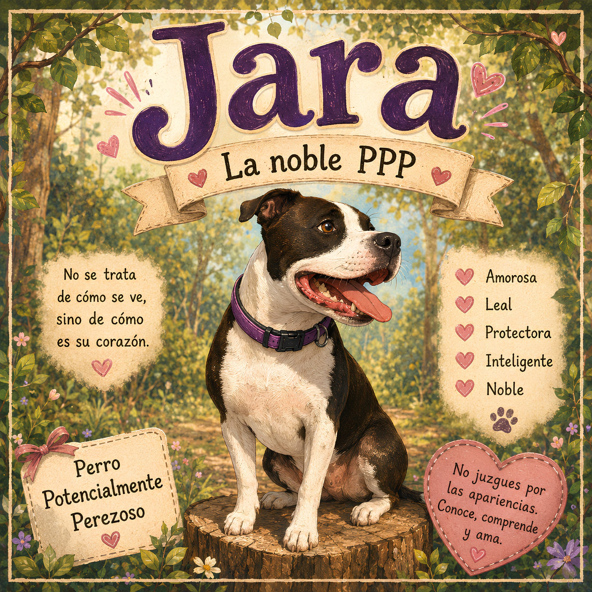
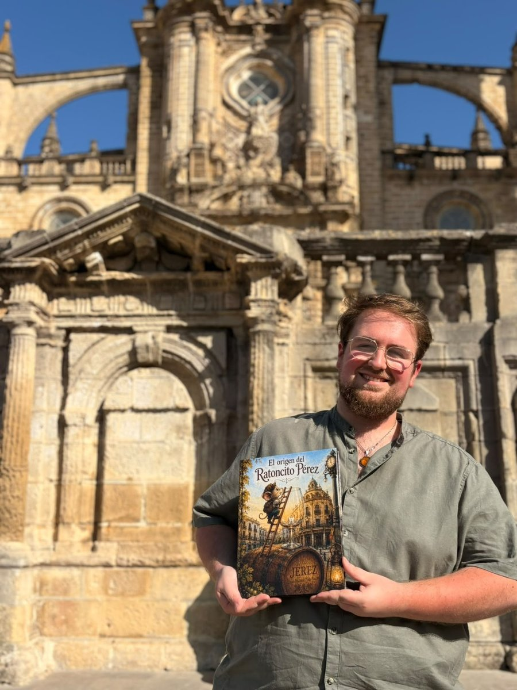

Juan Manuel Vela Vacas
Auteur de contes pour enfants originaire de Jerez. Ici, vous trouverez mes histoires, mes personnages et les mondes que je crée page après page.
DÉCOUVRIR MES LIVRESME DÉCOUVRIRMes livres
Des histoires très différentes, nées de l'imagination, de la tradition et de ces petites choses qui méritent de devenir un conte.

L'origine de la Petite Souris
Avant de devenir la souris la plus célèbre du monde, Pérez n'était qu'une petite souris qui vivait à Jerez.
ENTRER DANS L'HISTOIRE →
Jara, la noble PPP
Une histoire d'amour, de respect et d'éducation. Car ce n'est pas son apparence qui compte, mais son cœur.
📖 Disponible uniquement en espagnol
RENCONTRER JARA →Saviez-vous que le Père Noël
a une histoire espagnole ?
Une nouvelle histoire prend forme. Avant de devenir le personnage que nous connaissons tous, il y eut un homme, une légende et un voyage qui allait tout changer.
La prochaine histoire de Juan Manuel Vela Vacas.
Saint Nicolas
Une nouvelle histoire est sur le point de commencer...

Bonjour, moi c'est Juan Manuel.
Je suis originaire de Jerez et j'aime transformer des idées, des souvenirs et de petites histoires en contes que les enfants comme les adultes peuvent apprécier.
Je m'inspire de la tradition, des animaux et de cette magie qui apparaît lorsqu'une histoire parvient à rester dans la mémoire.